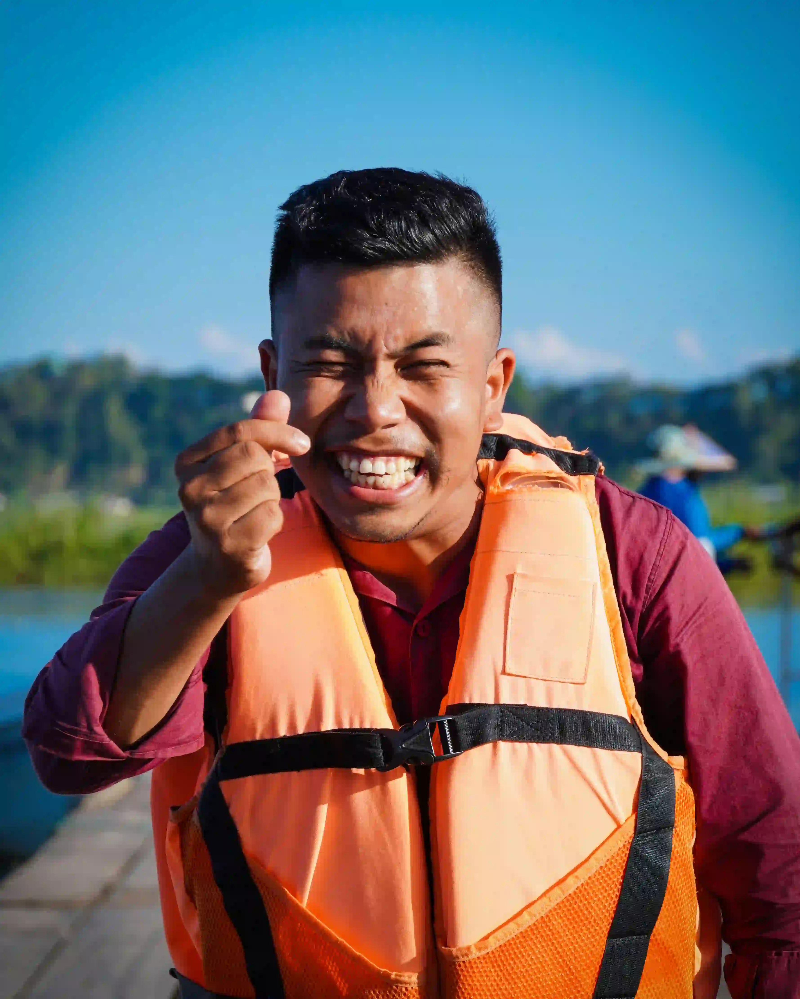

Mission: To share the natural wonder of the Nile through unforgettable adventure activities.
Purpose: To lead the way in adventure tourism on the Nile, providing safe, high-quality, and all-inclusive full-day river and riverbank experiences for individuals, groups, and families.